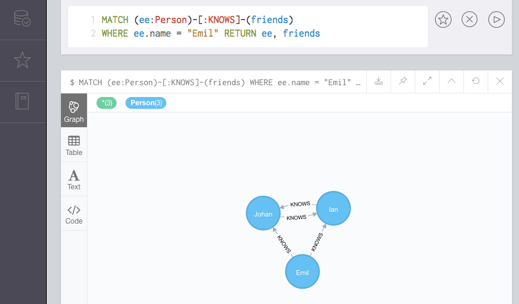

Neo4j 是世界上最流行的图数据库管理系统（DBMS），同样是最流行的 NoSQL 数据库之一。

Neo4j 是什么
Neo4j 以图的方式存储和展示数据，数据由节点和节点间的关系来表示。
Neo4j 数据库（和任何图数据库一样）与关系型数据库（如：MS Access、SQL Server、MySQL）有很大不同。关系数据库使用表、行和列来存储数据，他们以表格的形式展示数据。
Neo4j 不使用表、行或者列存储或展示数据。
Neo4j 用来做什么
Neo4j 非常适合存储有很多关联关系的数据。这是图数据库可以发挥巨大作用的地方。实际上，像 Neo4j 这样的图数据库在处理关系数据方面要优于关系型数据库。
图模型通常不需要预定义结构，你不需要在加载数据前创建数据库结构（就像在关系型数据库中那样）。在 Neo4j 中，数据就是结构。Neo4j 是一个 「结构可选」的 DBMS。
然而 Neo4j 能更好地处理关系数据的主要原因在于它允许你创建关系。Neo4j 是围绕关系而建立的。它不需要设置主键/外键约束来预先确定哪些字段或者哪些数据间有关系。在 Neo4j 中，只要在你需要时添加任何点之间的关系就行了。
所以，这使得 Neo4j 非常合适社交网络应用，比如 Facebook、Twitter 等。同时，Neo4j 还可以应用于很多其他领域。
以下是一些 Neo4j 主要应用领域：
- 社交网络
- 实时产品推荐
- 网络架构图
- 欺诈识别
- 访问管理
- 基于图的数字资产搜索
- 主数据管理